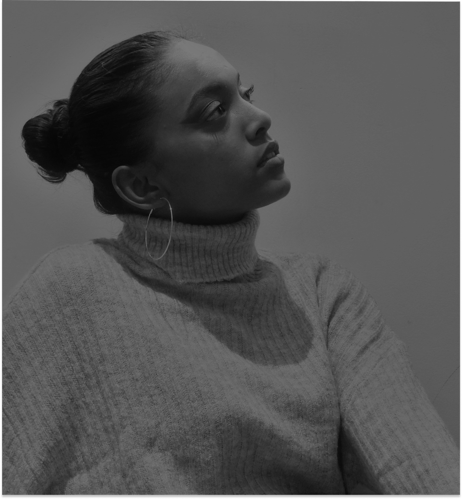
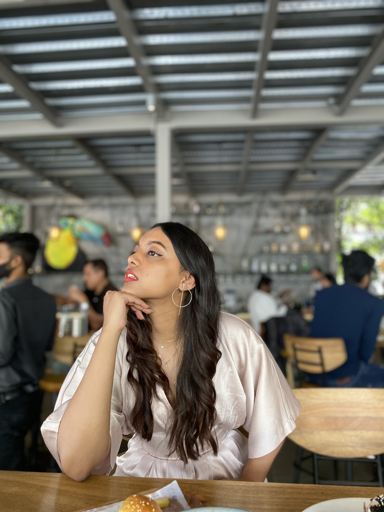

My UG in CSE and relevant internship experiences gave me a strong technical hold and an understanding of
product life-cycle development. The concepts of computer science were never enough to answer all the questions
on my mind. Human-computer interaction has become broader than CSE itself. This intersection of design and technology
is where I thrive. I have made conscious and constant efforts to make myself a better problem solver via unique learning
experiences. I work to understand the needs of the stakeholders, I use inclusive and participatory design approaches wherever
necessary and always focus on improving accessibility. While there’s a gazillion problem spaces where UX can play a vital role,
accessibility for older adults is of keen interest to me.
In my free time when I'm not hacking away, you can find me in an apron
cooking or baking (usually deserts cause that's my forte ! ). Constant appreciations and requests for my recipes lead to creation
of my very own Instagram page with my cousin sister.

